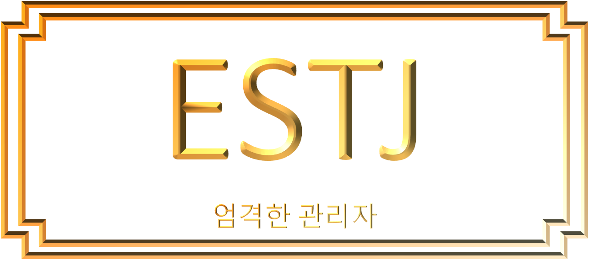

당신과 비슷한
캐릭터는..

'이순재(거침없이 하이킥) & 배타미(WWW)'
#엄격함 #철두철미 #결과중심적 #집중력 #직설
현실감각과 리더십이 뛰어나서 경제력이 좋은 당신!
- 매우 실질적이고 결과 중심적인 사고를 지니고 있어요.
- 조직의 목표에 초점을 잘 맞추며, 타고나게 조직적이고 객관적인 결정을 잘해요.
- 일에 대한 집중력과 인내력이 강한 타입이에요.
- 무엇이 비논리적이고 일관성이 없는지, 실제적이지 못하고 비효율적인지를 잘 파악하는 편이에요.
- 자기관리가 철저한 편이라서 모든 것이 제 자리에 있는 것을 선호하며, 계획했던 일들이 틀어지면 스트레스를 받게 되는 성격이에요.
- 저하고 엄격한 모습에 냉혈한 성격이라고 오해할 수도 있어요. 하지만 주변 사람들에게는 의리 있고 배려심 깊은 모습을 보여주기도 해요.
- 사람을 판단할 때 지나치게 업무 위주로 생각하고, 속단 속결로 결정하는 경향이 있어요.
- 감정이 잘 드러나서 직설적인 화법을 주로 사용하고는 해요. 그래서 대화에 있어서 감동을 주기보다는 상대방을 이해시키기 위해서 노력하는 특징이 있어요.
-

-

-

-

-